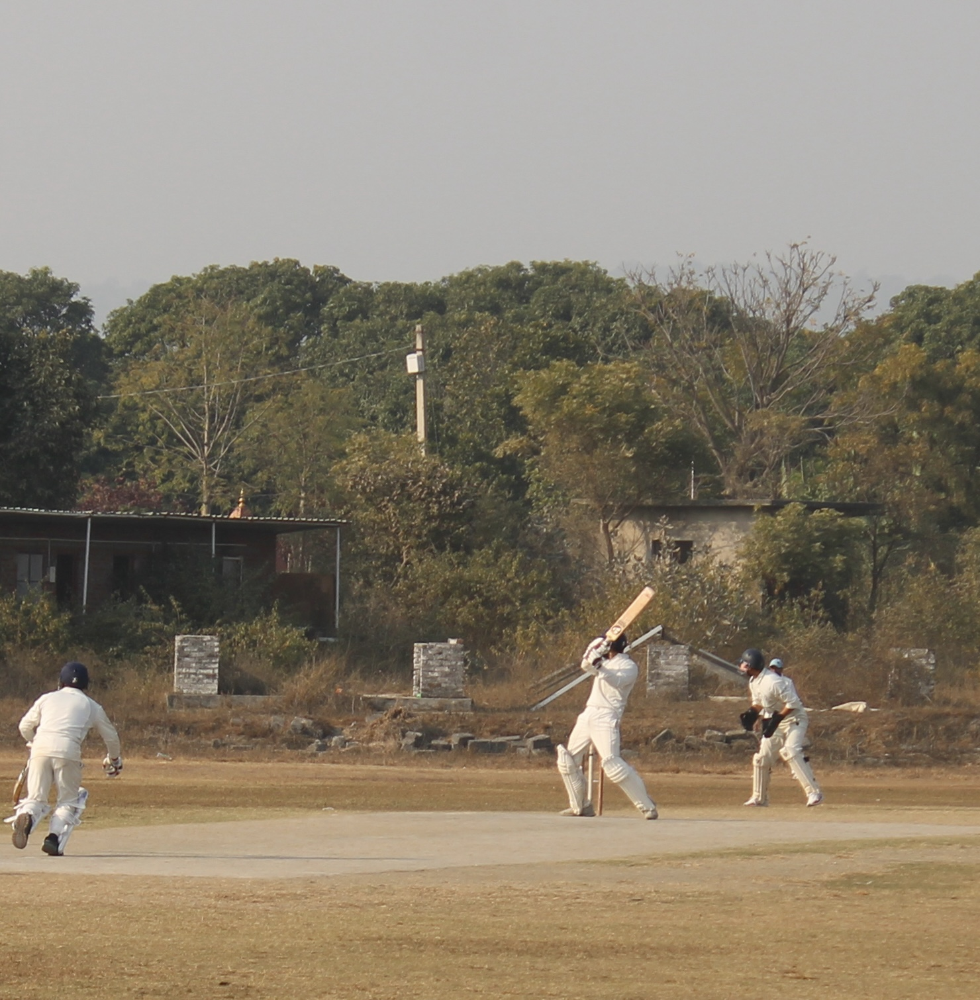
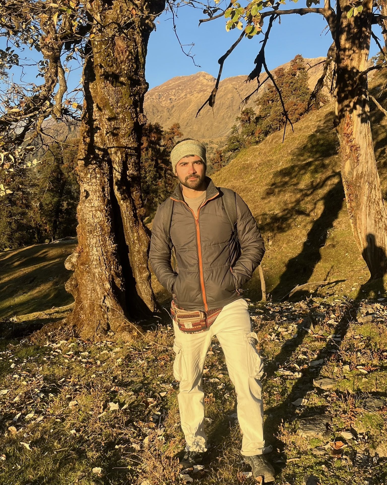
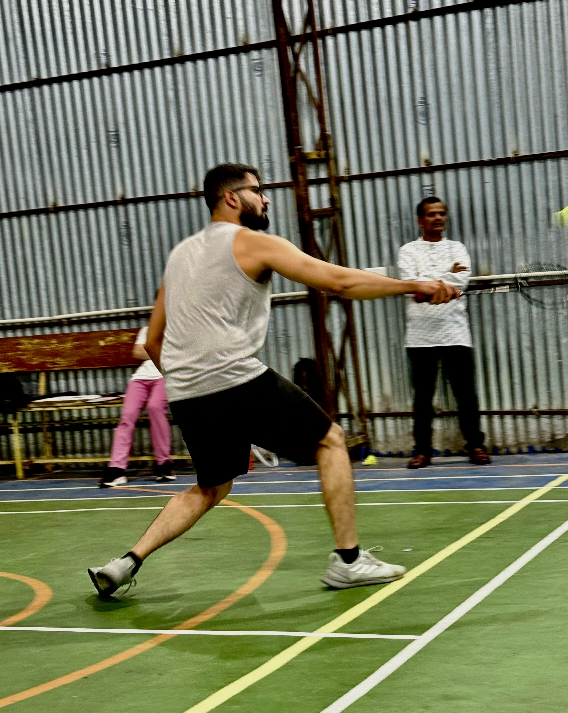
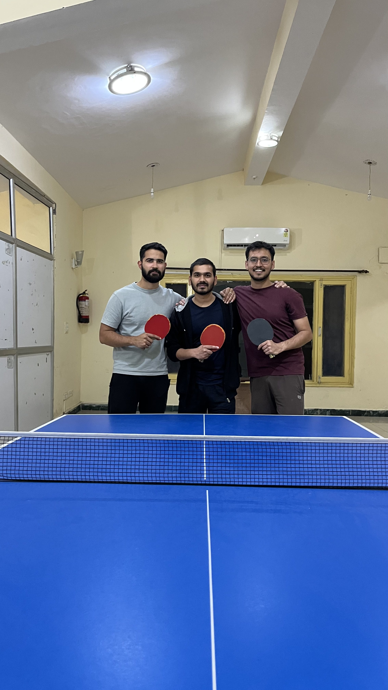
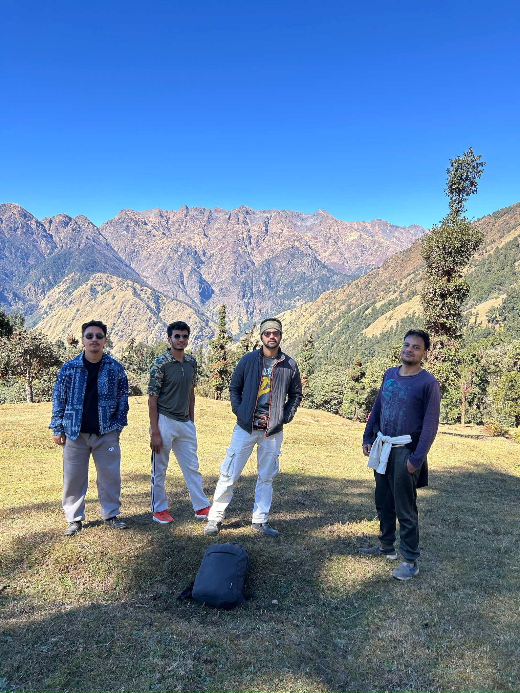
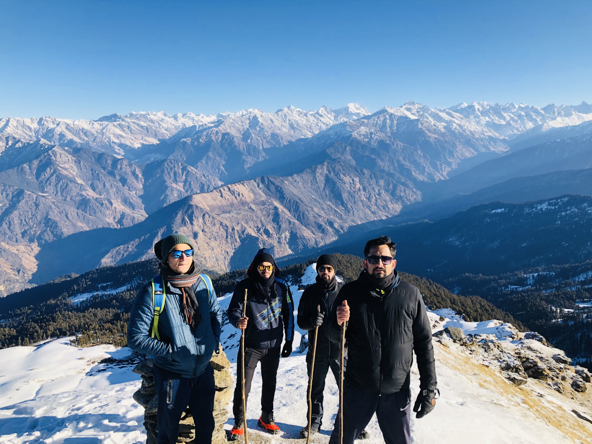
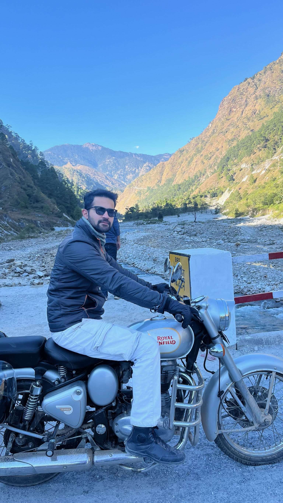

Cricket
Wicketkeeper-batsman
I have played cricket since I was ten and now represent the ARIES cricket team as a wicketkeeper-batsman.
Beyond the Lab
Outside research, I find energy in sport, time on mountain trails, and rides through the countryside. These are the pursuits that keep me curious, grounded, and moving.

Sport

Cricket
I have played cricket since I was ten and now represent the ARIES cricket team as a wicketkeeper-batsman.

Badminton
I prefer the focus and pace of singles, and I was delighted to win the intra-ARIES badminton tournament.

Table Tennis
It is not my first choice of sport, but I still manage to find my rhythm at the table.
Outdoors


Hiking
If I were not in academia, I might well be a hiker. The mountains are where I feel most present and most at home.

Bike Rides
Countryside rides through the mountains are some of my most memorable experiences. I genuinely live for those moments.